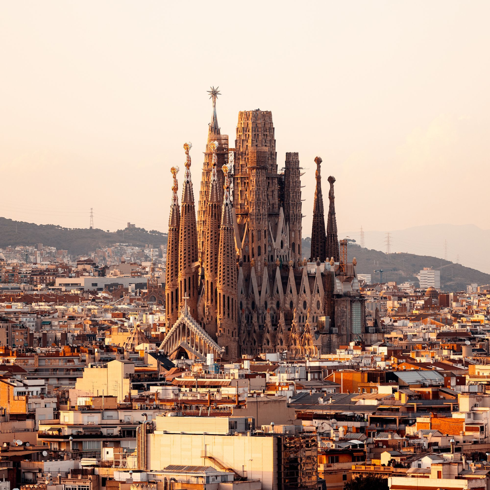
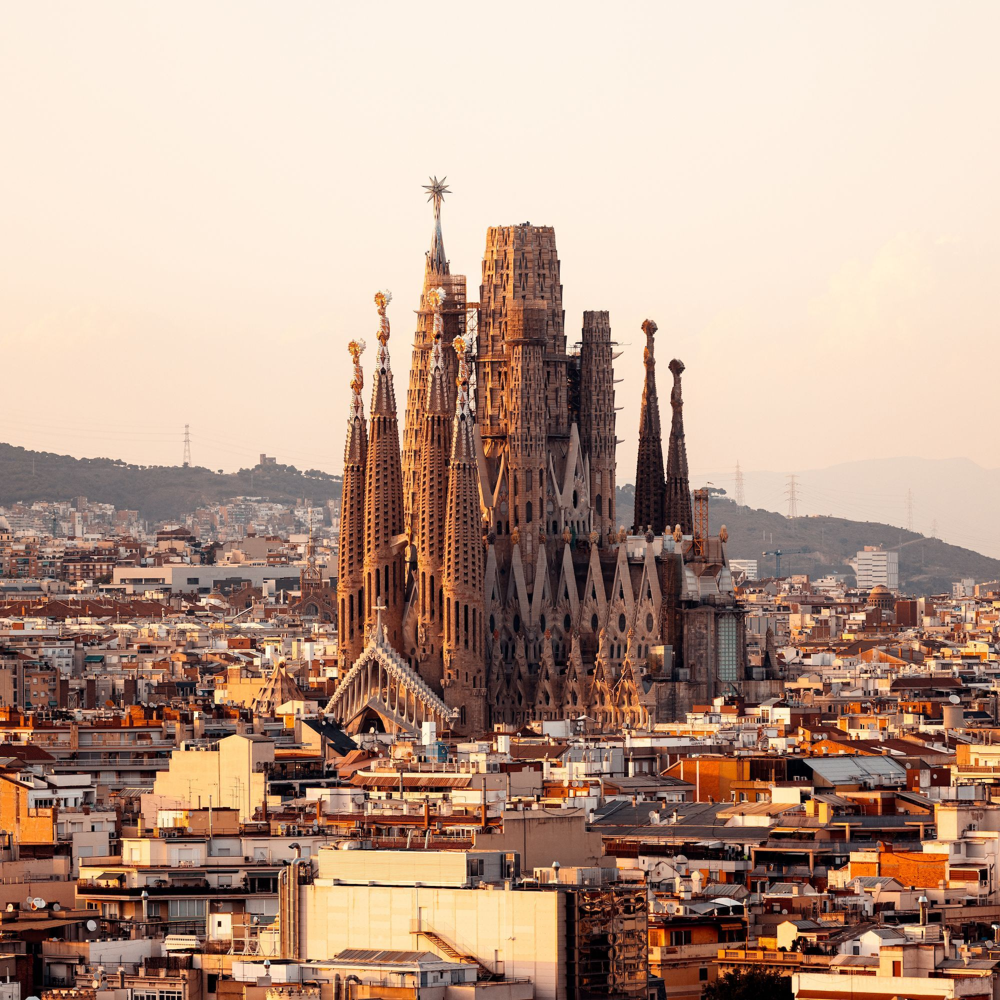

Si Antoni Gaudí est considéré comme le génie de la Sagrada Familia, la basilique est en fait l'idée du fondateur de l'« Association spirituelle des dévots de Saint-Jean », Josep Maria Bocabella. Après sa visite en Italie en 1872, il voulait construire une église inspirée de la basilique de Lorette. L'architecte Francisco de Paula del Villar est d'abord chargé de concevoir l'église et son projet suit un style néogothique. En mars 1882, la crypte de l'abside de l'église a commencé à être construite. Plus tard, en 1883, Antoni Gaudí a pris la responsabilité de la construction et a radicalement changé le plan de l'église. Il a été officiellement nommé architecte directeur l'année suivante. À cette époque, les travaux de la façade de la Nativité avaient commencé. Lorsque Gaudí meurt brutalement en 1926, seuls 20 % des travaux sont terminés avec l'achèvement du clocher de Saint Barnabé. Après sa mort, les travaux ont été repris par son disciple Domènec Sugrañes i Gras jusqu'à la guerre civile de 1936. Pendant les troubles civils, de nombreux plans originaux et des maquettes ont malheureusement été détruits par les anarchistes catalans. Les travaux n'ont repris qu'après la guerre civile, avec une nouvelle conception basée sur des versions reconstituées des plans détruits et des adaptations modernes.
Après 1940, les travaux de la basilique changent plusieurs fois de mains. Les architectes Francesc Quintana, Isidre Puig Boada, Lluís Bonet i Gari et Francesc Cardoner poursuivant les travaux. En 1952, l'escalier de la façade de la Nativité est construit, et deux ans plus tard, les fondations de la façade de la Passion sont posées. En 1961, un musée est créé pour faire connaître les différents aspects de la basilique. En 1976, les clochers de la façade de la Passion sont achevés et deux ans plus tard, la construction des façades des nefs latérales commence. Les travaux sur les nefs, les colonnes, les voûtes et les façades de la nef principale, les transepts, la croisée et l'abside ont également commencé en 1986. En 2012, Jordi Faulí i Oller a pris la relève en tant qu'architecte en chef du projet. En 2015, il a annoncé que 70 % de la construction était terminée. La phase finale de la construction comprenait l'élévation de six clochers. Depuis juillet 2017, une messe internationale est célébrée à la basilique chaque dimanche. Si l'église a fonctionné, plusieurs événements ont interrompu l'avancée de sa construction. Le 19 avril 2011, un pyromane a déclenché un petit incendie dans la sacristie, qui a été maîtrisé en 45 minutes. La pandémie a interrompu les travaux pendant 4 mois entre mars et juillet 2020. Malgré ces difficultés, le 29 novembre 2021, une étoile de cristal illuminée de 7 mètres à douze branches est installée au sommet de la tour Marie.
La basilique de la Sagrada Família est un défi de construction sur un plan de basilique de cinq nefs et un transept de trois qui configurent un plan symbolique de croix latine. À l'extrémité supérieure de la croix se trouve l'abside en demi-cercle qui ferme la basilique par l'arrière. De plus, la basilique possède trois façades monumentales: chacune d'elles représente un des trois moments culminants de la vie du Christ : sa naissance (rue Marina), sa passion, mort et résurrection (rue Sardenya) et sa gloire, présente et future (rue Mallorca). Les quatre tours clocher de chaque façade symbolisent, ensemble, les douze apôtres qui accompagnent Jésus de Nazareth. A toutes il faut ajouter quatre tours consacrées aux évangélistes. Une tour en coupole sur l'abside où l'autel est consacré à la Vierge, avec une hauteur de 138 mètres, couronnée par une étoile de 12 pointes qui s'illumine la nuit. Et la tour la plus haute sera consacrée au Sauveur, et dépassera les 170 mètres de hauteur. Aujourd'hui, on peut visiter deux des trois façades construites, les nefs, l'abside et le musée, qui permettent de capter le passé, le présent et l'avenir de la basilique à travers des maquettes, des photographies, des plans, des objets de décoration et des systèmes audiovisuels. La visite donne également la possibilité de monter sur les tours en ascenseur et de descendre à pied pour contempler les vues magnifiques de Barcelone.
1882 : le projet est élaboré par l'architecte Francisco Villar. Cette année-là, en mars, l'évêque Urquinaona pose la première pierre de la basilique.
1883 : Antoni Gaudí prend la relève de Villar.
1885 : la chapelle de Saint Joseph est inaugurée dans la crypte. Les premières messes commencent à être célébrées.
1891 : début des travaux de la célèbre façade de la Nativité.
1925 : le clocher de Saint Barnabé sur la façade de la Nativité est achevé. Il s'agit de la seule structure achevée par Gaudí avant sa mort en 1926.
1936 : des vandales entrent dans la Sagrada Familia et détruisent les plans, les photographies et les maquettes de la basilique pendant la guerre civile espagnole.
1939 : Francesc de Paula Quintana prend en charge la gestion du site.
1952 : l'escalier de la façade de la Nativité est achevé. La façade est éclairée pour la première fois.
1954 : pose de la première pierre de la façade de la Passion
1961 : création d'un musée pour expliquer les éléments historiques, culturels et symboliques de la basilique.
1966 : Isidre Puig i Boada et Lluís Bonet i Garí prennent la relève après la mort de Francesc de Paula Quintana.
1976 : les clochers de la façade de la Passion sont achevés.
1978 : début de la construction des façades des nefs latérales.
1983 : Francesc Cardoner i Blanch prend la relève.
1985 : Jordi Bonet i Armengol est nommé architecte en chef et chef de chantier.
1986 : Josep Maria Subirachs est chargé de réaliser les sculptures de la façade de la Passion. La même année, début des travaux de fondation de toutes les nefs, des colonnes, des voûtes et des façades de la nef principale, des transepts, de la croisée et de l'abside.
2005 : la façade de la Nativité et la crypte sont déclarées patrimoine mondial de l'UNESCO.
2010 : le pape Benoît XVI consacre le temple, l'ouvrant officiellement au culte religieux et lui donnant le statut de basilique mineure.
2012 : Jordi Faulí prend la relève en tant qu'architecte en chef et responsable du chantier.
2016 : début de la construction des tours des évangélistes, de la Vierge Marie et de Jésus-Christ.
2018 : la Croix est placée au sommet de la façade de la Passion.
2020 : la construction s'arrête en raison de la pandémie de la Covid-19 en mars 2020, et ne reprend qu'en octobre.
2021 : le 8 décembre, la tour de la Vierge Marie est inaugurée et la construction de la tour de Jésus se poursuit.
 
